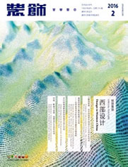

首页 > 学科分类 > 哲学人文 > 美术书法雕塑与摄影 > 装饰

装饰 16年10期
独家核心优先获奖EISCI
复合影响因子：3.3160 | 综合影响因子：2.3620
主 办：中国社会科学院工业经济研究所
ISSN：中国社会科学院工业经济研究所
周 期：月刊
CN：月刊
出版地：北京市
创刊时间：北京市
—目 录—
信息时空
我国的司法机关依法独立行使职权原则强调法院整体的独立性,实践中依法独立行使职权原则异化为司法的地方化以及司法的行政化。在司法改革的背景下,应当把握改革契机,推动司法机关依法独立行使职权。在我国,应当淡化司...
我国的司法机关依法独立行使职权原则强调法院整体的独立性,实践中依法独立行使职权原则异化为司法的地方化以及司法的行政化。在司法改革的背景下,应当把握改革契机,推动司法机关依法独立行使职权。在我国,应当淡化司...
特别关注:《装饰》创刊50周年纪念活动
我国的司法机关依法独立行使职权原则强调法院整体的独立性,实践中依法独立行使职权原则异化为司法的地方化以及司法的行政化。在司法改革的背景下,应当把握改革契机,推动司法机关依法独立行使职权。在我国,应当淡化司...
我国的司法机关依法独立行使职权原则强调法院整体的独立性,实践中依法独立行使职权原则异化为司法的地方化以及司法的行政化。在司法改革的背景下,应当把握改革契机,推动司法机关依法独立行使职权。在我国,应当淡化司...
特别策划:历史主义
我国的司法机关依法独立行使职权原则强调法院整体的独立性,实践中依法独立行使职权原则异化为司法的地方化以及司法的行政化。在司法改革的背景下,应当把握改革契机,推动司法机关依法独立行使职权。在我国,应当淡化司...
我国的司法机关依法独立行使职权原则强调法院整体的独立性,实践中依法独立行使职权原则异化为司法的地方化以及司法的行政化。在司法改革的背景下,应当把握改革契机,推动司法机关依法独立行使职权。在我国,应当淡化司...
特别关注:《装饰》创刊50周年纪念活动
我国的司法机关依法独立行使职权原则强调法院整体的独立性,实践中依法独立行使职权原则异化为司法的地方化以及司法的行政化。在司法改革的背景下,应当把握改革契机,推动司法机关依法独立行使职权。在我国,应当淡化司...
我国的司法机关依法独立行使职权原则强调法院整体的独立性,实践中依法独立行使职权原则异化为司法的地方化以及司法的行政化。在司法改革的背景下,应当把握改革契机,推动司法机关依法独立行使职权。在我国,应当淡化司...